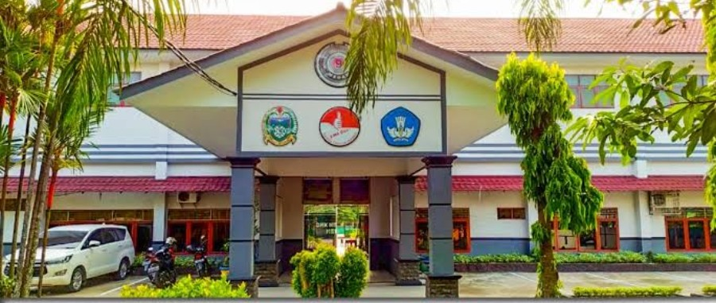
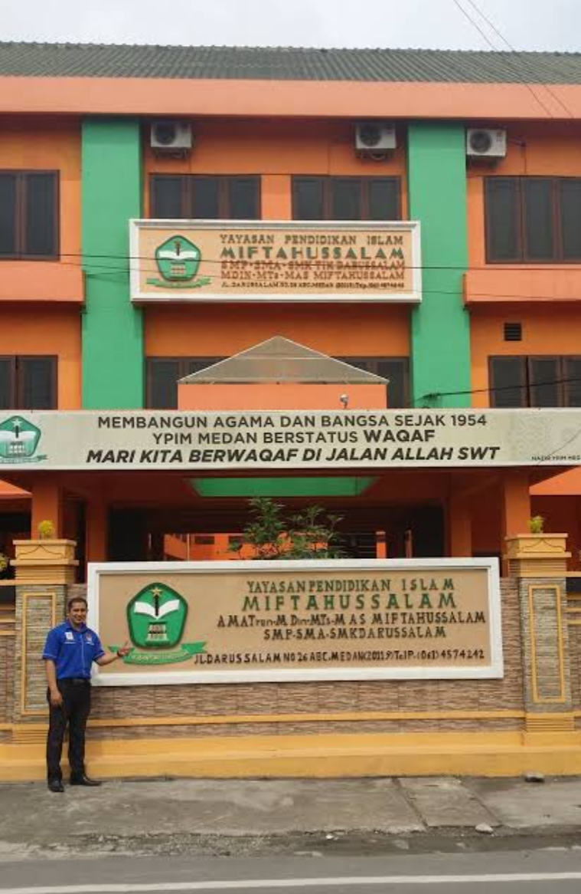
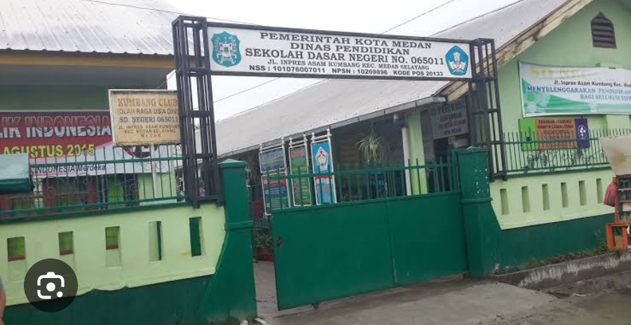

1. Riwayat Sekolah
- SMK Negeri 9 (2025 – sekaramg) - Jurusan RPL
- SMP darussalam medan (2022 – 2025)
- SD Negeri 064011 (2016 – 2022)



Tagline / Moto Hidup: "Belajar tanpa henti, berkarya tanpa batas, dan bermanfaat bagi sesama."



Hobi utama saya adalah Mengenai Motor. Melalui motor, saya dapat melakukan beberapa hal seperti berimajinasi mengenai bodi motor yang ingin di buat supaya tampilan lebih bagus,lalu bereksperimen terhadap mesin motor ,dan membuat hal baru pada kelistrikan motor